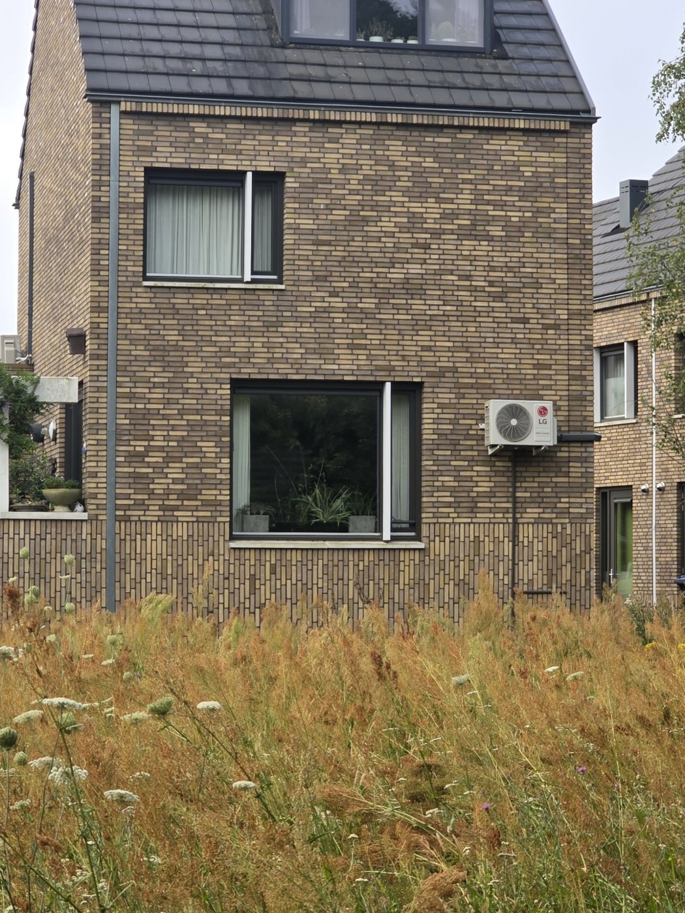
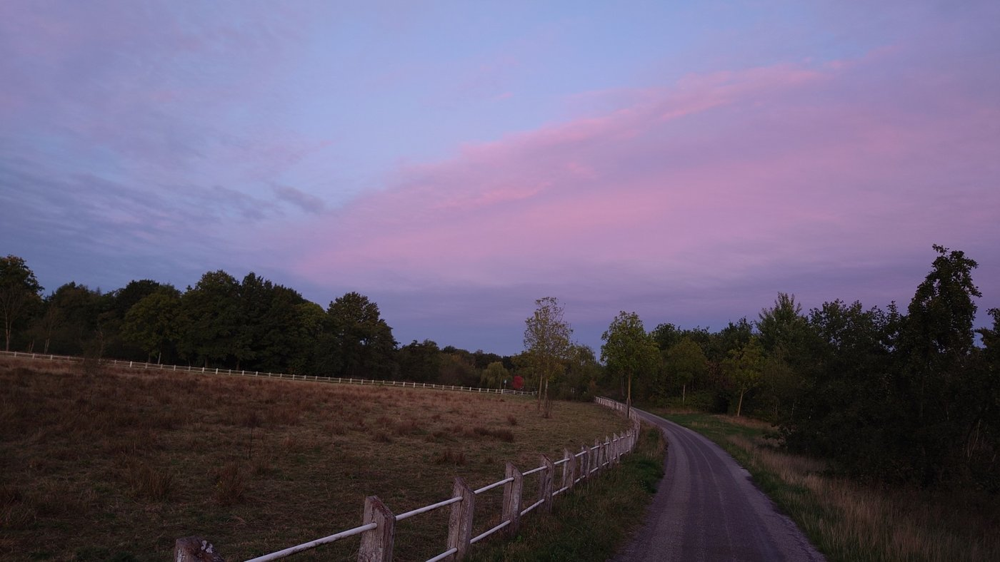
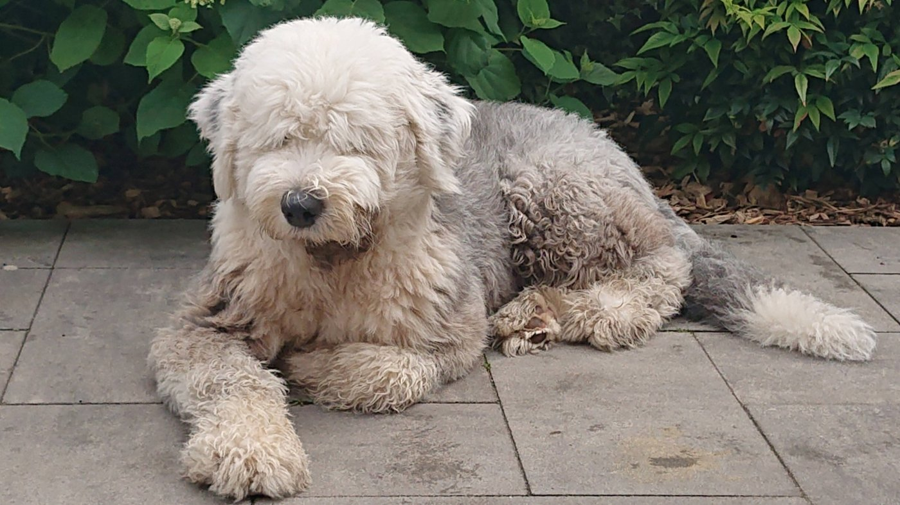
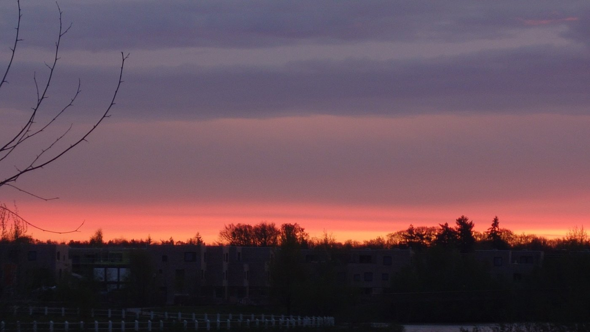
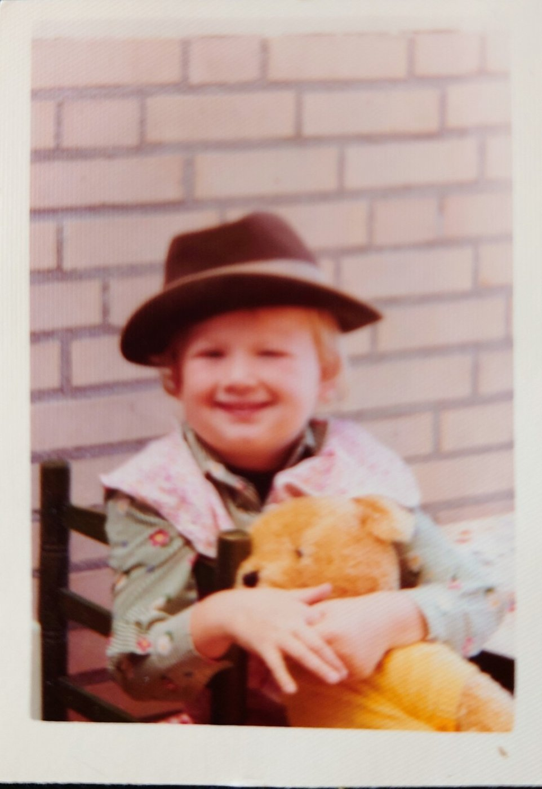
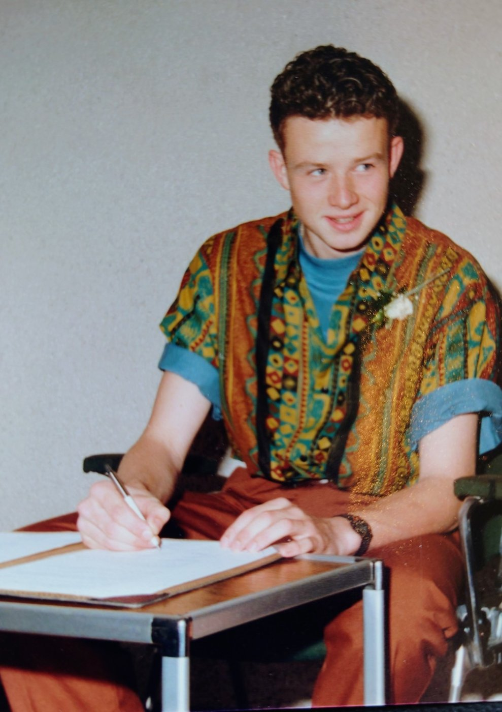
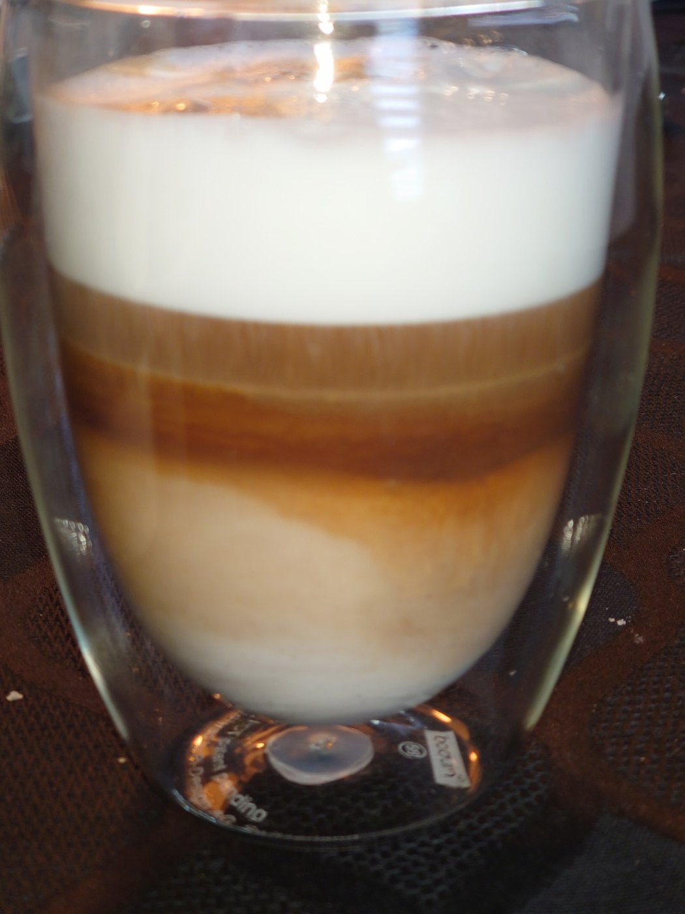
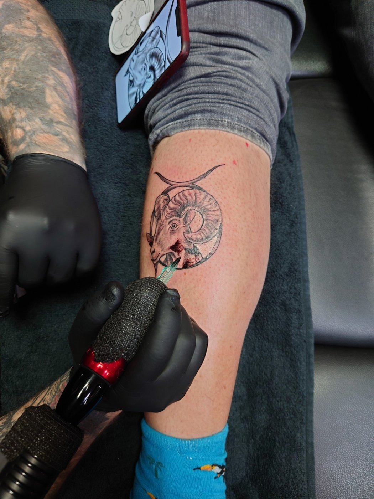

Plannen en verbeteren horen bij mij. Maar als je mij wilt leren kennen, hoort daar ook mijn leven buiten het werk bij. Mijn gezin, mijn thuis, Jip en de dingen waar ik plezier aan beleef.
Ik ben vader van Jeske, Wytze en Thije en deel mijn leven met Anna-Sophie. Zij zijn belangrijk voor me en horen bij wie ik ben.
Ik vind het belangrijk dat we met respect met elkaar omgaan. Gewoon naar elkaar luisteren, iets voor een ander doen en waarderen wat iemand voor jou betekent. En als iemand iets goed doet, mag dat ook gezegd worden.
Ik woon in Meerhoven, in Eindhoven, bij park Meerland. Hieronder een kijkje naar mijn huis en de omgeving. Met Jip, onze bobtail, ga ik hier regelmatig wandelen.




Bij mijn verhaal horen ook foto's van vroeger. Hier ben ik als kind en op mijn achttiende.


Bakken en barbecueën zijn twee liefhebberijen van mij. Goede ingrediënten, iets zelf maken en genieten van wat er op tafel komt. En een lekkere koffie hoort daar ook bij.


In deze tattoo komen twee sterrenbeelden samen. De grote ring is het teken van de Stier, het sterrenbeeld van mijn vader. Daarvoor staat de Ram, mijn eigen sterrenbeeld.
Zo staat mijn vader nog steeds achter mij. En kijkt hij een beetje met me mee.